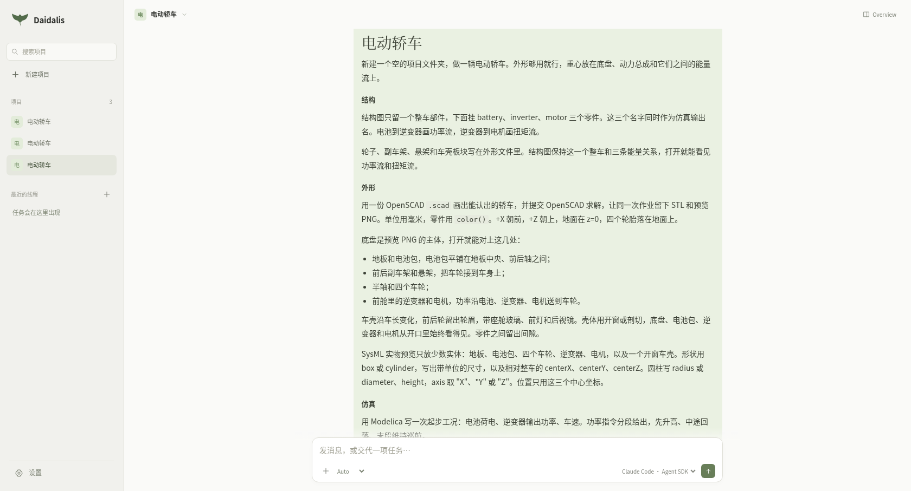
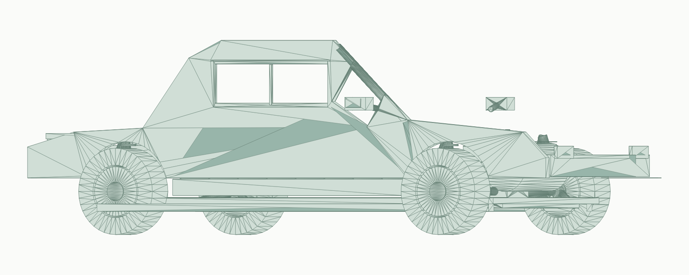
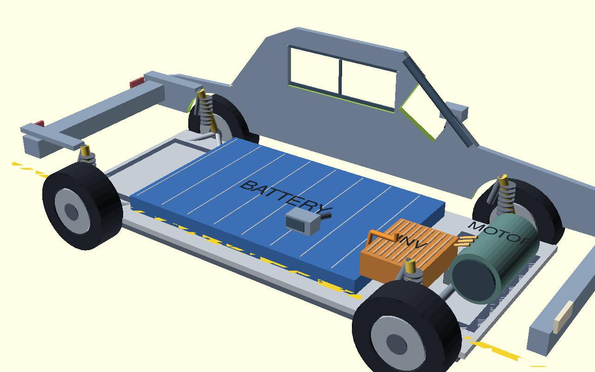
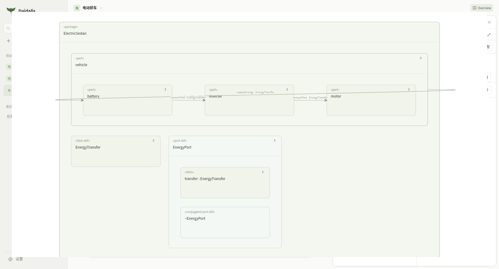
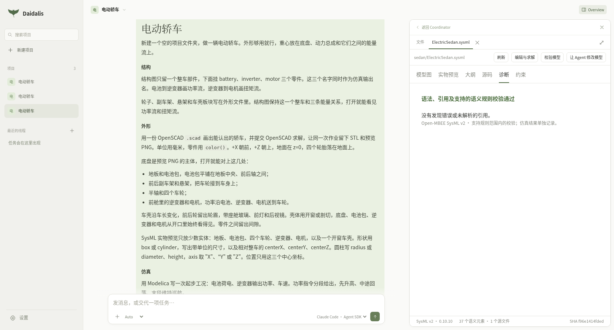
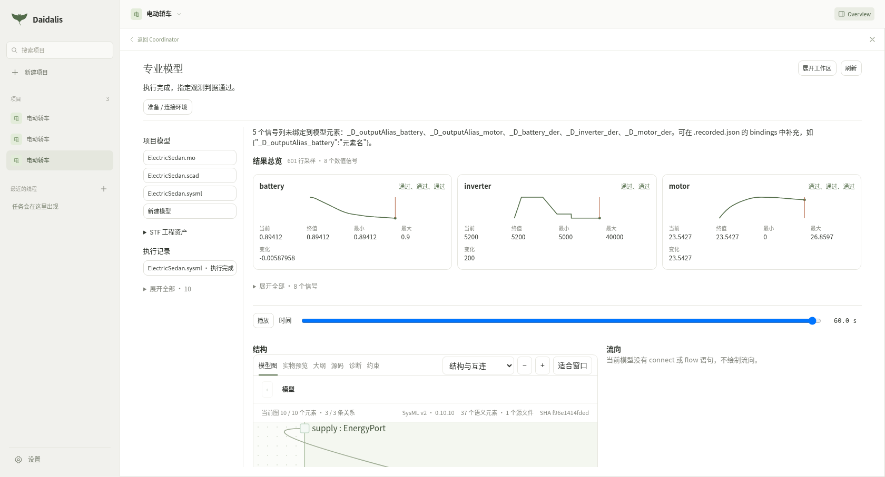
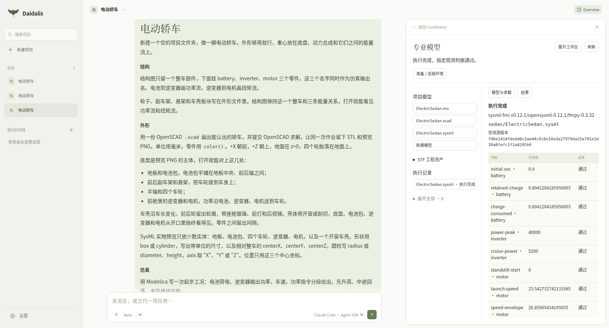

项目对话提交任务后，Agent 在 15 分 4 秒内完成建模、校验和仿真。权限是 Auto，运行时是 Claude Code Agent SDK，模型是 inplus/gpt-6.1-sol。下面的图都来自这次执行生成的 sedan/ElectricSedan 模型和它的求解记录。
任务要求结构图只留整车和 battery、inverter、motor，以及功率流、扭矩流。外形用一份 OpenSCAD 画出能认出的轿车，同一次作业留下 STL 和预览 PNG。仿真用 Modelica 做起步工况，并在 SysML 里绑定导出的 FMU，完成语义校验和一次实际求解。
提交的完整任务文本如下。
新建一个空的项目文件夹，做一辆电动轿车。外形够用就行，重心放在底盘、动力总成和它们之间的能量流上。
结构图只留一个整车部件，下面挂 battery、inverter、motor 三个零件。这三个名字同时作为仿真输出名。电池到逆变器画功率流，逆变器到电机画扭矩流。
轮子、副车架、悬架和车壳板块写在外形文件里。结构图保持这一个整车和三条能量关系，打开就能看见功率流和扭矩流。
用一份 OpenSCAD .scad 画出能认出的轿车，并提交 OpenSCAD 求解，让同一次作业留下 STL 和预览 PNG。单位用毫米，零件用 color()。+X 朝前，+Z 朝上，地面在 z=0，四个轮胎落在地面上。
底盘是预览 PNG 的主体，打开就能对上这几处：地板和电池包，电池包平铺在地板中央、前后轴之间；前后副车架和悬架，把车轮接到车身上；半轴和四个车轮；前舱里的逆变器和电机，功率沿电池、逆变器、电机送到车轮。
车壳沿车长变化，前后轮留出轮眉，带座舱玻璃、前灯和后视镜。壳体用开窗或剖切，底盘、电池包、逆变器和电机从开口里始终看得见。零件之间留出间隙。
SysML 实物预览只放少数实体：地板、电池包、四个车轮、逆变器、电机，以及一个开窗车壳。形状用 box 或 cylinder，写出带单位的尺寸，以及相对整车的 centerX、centerY、centerZ。圆柱写 radius 或 diameter、height，axis 取 "X"、"Y" 或 "Z"。位置只用这三个中心坐标。
用 Modelica 写一次起步工况：电池荷电、逆变器输出功率、车速。功率指令分段给出，先升高、中途回落、末段维持巡航。
导出 FMI 协同时，初始化保持标准输出干净，把标准输出留给执行器读取 JSON。SysML 计算里的 ToolExecution，其 uri 的文件名等于提交的 .fmu 文件名。回放轨迹的列绑定到 battery、inverter、motor。
语义校验通过。做一次真实的 FMI 求解，留下可回放的轨迹，判据给出通过或失败。回放时 battery、inverter、motor 随各自信号变色。开窗车壳的预览 PNG 里同时看得见这三件和底盘。

任务已提交。
Agent 写出 sedan/ElectricSedan.scad，并在同一次 OpenSCAD 作业里导出了彩色预览 PNG 和 STL。画面是开窗车壳，地板上能看见电池包、逆变器和电机，轮胎落在地面上。

这次导出的 STL，滚轮放大后铺满画面。23088 个三角形，Z 轴朝上、侧面放平。包围尺寸 4500 × 2128 × 1440。

这次 OpenSCAD 作业导出的预览 PNG。
打开这次生成的 sedan/ElectricSedan.sysml。模型图里整车 vehicle 下面是 battery、inverter、motor。powerFlow 从电池指向逆变器，torqueFlow 从逆变器指向电机。源文件 1 个，语义元素 37 个。

这次模型的结构图。
诊断页打开的就是这份 SysML。语法、引用及支持的语义规则校验通过。

这次模型的语义校验。
最终一次 FMI 协同仿真使用 sysml-fmi v0.12.1、OpenSysML 0.12.1 和 FMPy 0.3.32，执行完成，指定观测判据通过。记录轨迹有 601 行、8 个数值信号，来自这次的 ElectricSedan.sysml 和 Euler 导出的 ElectricSedan.fmu。回放配置直接绑定 battery、inverter、motor 三列。

这次 FMI 作业的结果总览，601 行采样。battery 从 0.9 降到 0.89412，inverter 先升高再落到 5200，motor 从静止升到约 23.54。

这次 FMI 求解的判据。初始 SOC、峰值功率、巡航功率、起步车速和车速包络均通过。
60 秒起步工况的结果：
| 项目 | 结果 |
|---|---|
| 电池 SOC | 90.00% → 89.41% |
| 逆变器峰值功率 | 40 kW |
| 末段功率 | 5.2 kW |
| 最终车速 | 84.75 km/h |
| 最高车速 | 96.69 km/h |